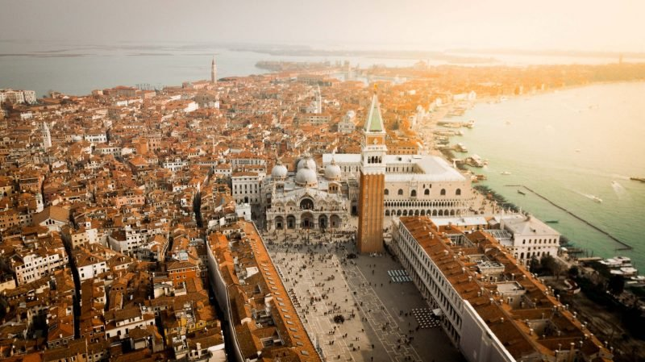
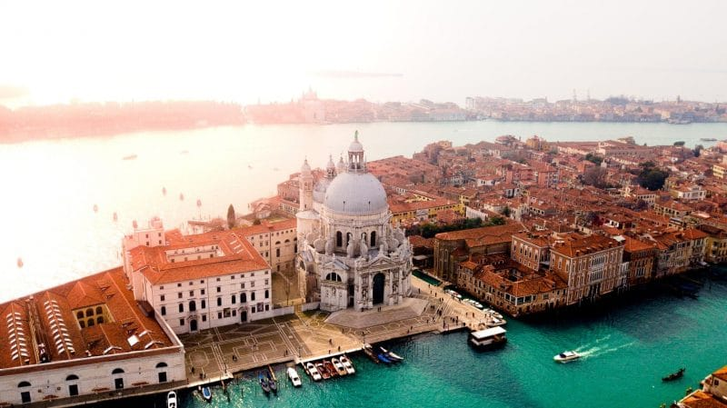
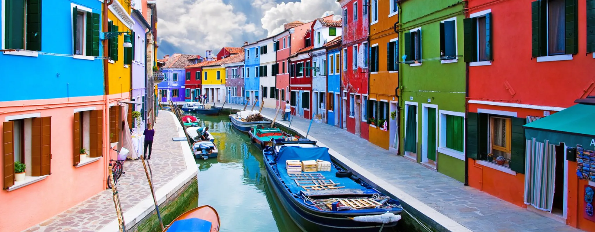

La Place Saint-Marc est certainement l’endroit le plus emblématique à visiter à Venise : c’est la place principale de la ville, un lieu de rencontres et de rendez-vous pour les habitants mais aussi pour les touristes. C’est véritablement la plaque tournante de Venise : vous serez obligés d’y passer pour aller visiter la Basilique Saint-Marc, le palais des Doges, mais aussi le Campanile de Saint-Marc et tous les autres monuments incontournables.
Cette église singulière se situe à l’extrémité sud du Grand Canal : on la reconnaît car elle se dresse sur un bout de terre très étroit entre le Grand canal et le Bacino di San Marco. Le dôme de cette basilique est rapidement devenu un symbole puissant de la ville et a inspiré de nombreux artistes comme Turner, Sargent ou Guardi. C’est l’un des édifices les plus impressionnants à visiter à Venise, érigé au milieu du 18ème siècle.
L’île de Murano est sûrement la plus connue pour son art de la verrerie, reconnu internationalement ainsi que son musée du verre. L’île de Burano est tout à fait singulière et très appréciée par les touristes pour la diversité des couleurs des maisons et pour ses décors qui sortent tout droit de cartes postales. Burano est connue pour son industrie de la dentelle. Enfin, la troisième île est l’île de Torcello : c’est la plus grande des 3 îles de la lagune et elle accueille la plus ancienne église. Mais c’est aussi une sorte de ville fantôme qui n’attire que peu de touristes.
